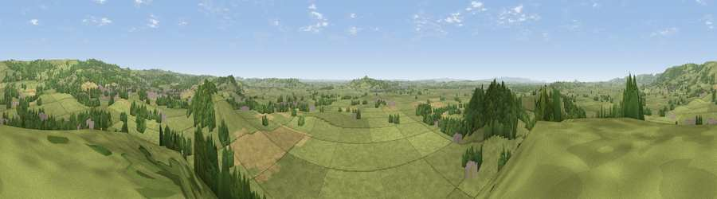

Ben Knowle Hill
#9273 in England · top 18% of its area beats it · near WookeyThe view, rendered

A 360° render of this exact spot computed from the terrain model, tree cover and land cover — summer colours, afternoon light, calibrated against photographs of famous viewpoints. Real trees, hedges and buildings will differ in detail.
The panorama
Grey silhouette: terrain skyline in each direction (720 bearings, Earth curvature and refraction included). Dashed green: skyline with trees (+15 m) and buildings (+8 m) as obstacles. Blue strip: how far the ground is visible on each bearing.
Where the view opens
Wedge length = distance to the farthest visible ground on that bearing (vegetation-aware). Rings at 10, 25 and 50 km.
What fills the view
74% grassland · 18% woodland · 6% cropland · 2% built-up
Angular shares of the visible panorama (visual magnitude), not map area. Landscape diversity 0.34 (0–1 Shannon).
Key numbers
More beautiful places nearby
The staircase of upgrades: each row has a higher view potential than everything closer. Driving times are estimates from straight-line distance, calibrated against real road routing — check an actual route before setting out.
| Place | Direction | Drive | Score |
|---|---|---|---|
| Viewpoint near Easton | N · 4 km | ~9 min | 72.6 |
| Viewpoint near Wookey Hole | NE · 5 km | ~10 min | 73.5 |
| Glastonbury Tor | S · 6 km | ~13 min | 75.8 |
| Beacon Batch | NNW · 13 km | ~24 min | 79.4 |
| Bleadon Hill [Loxton Hill] | NW · 19 km | ~33 min | 79.6 |
| Cothelstone Hill | WSW · 35 km | ~53 min | 82.1 |
| Viewpoint near West Bagborough | WSW · 35 km | ~54 min | 84.3 |
| Wills Neck | WSW · 36 km | ~55 min | 85.7 |
51.20103, -2.69376 · source: osm peak · position refined by local search. Computed location — check access rights before visiting.